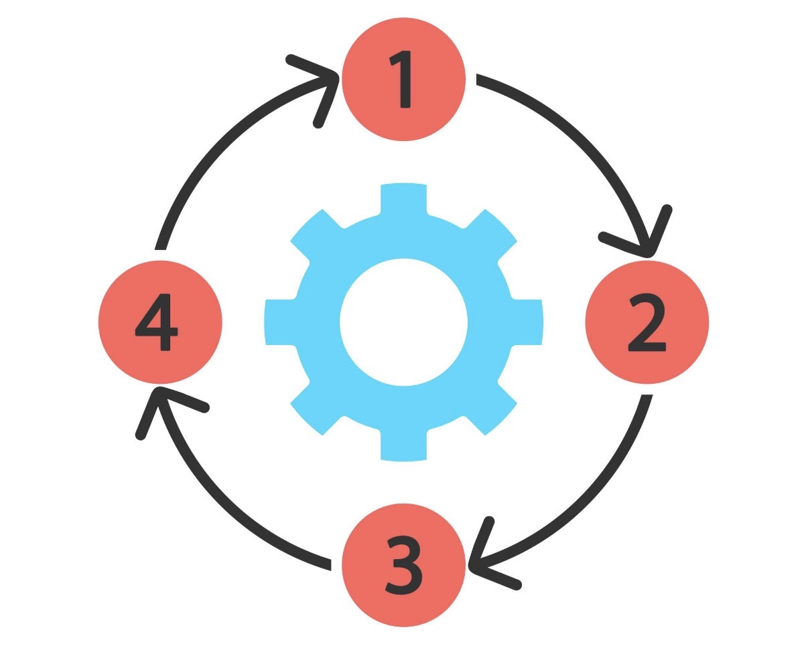
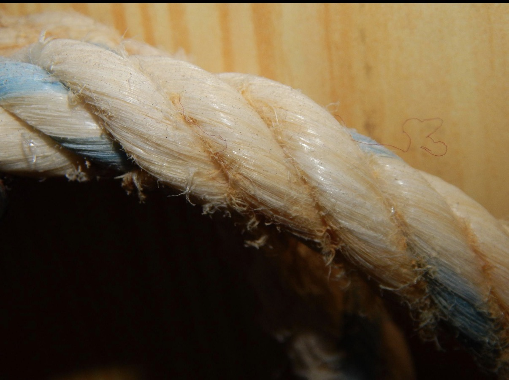
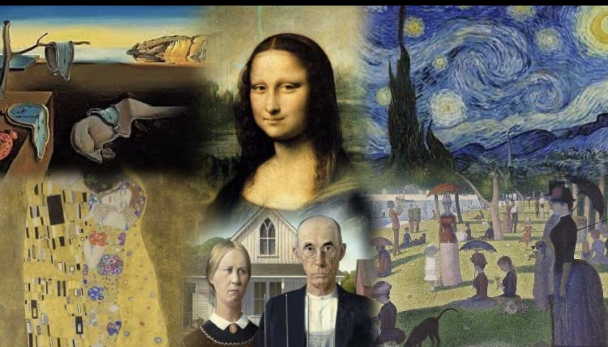
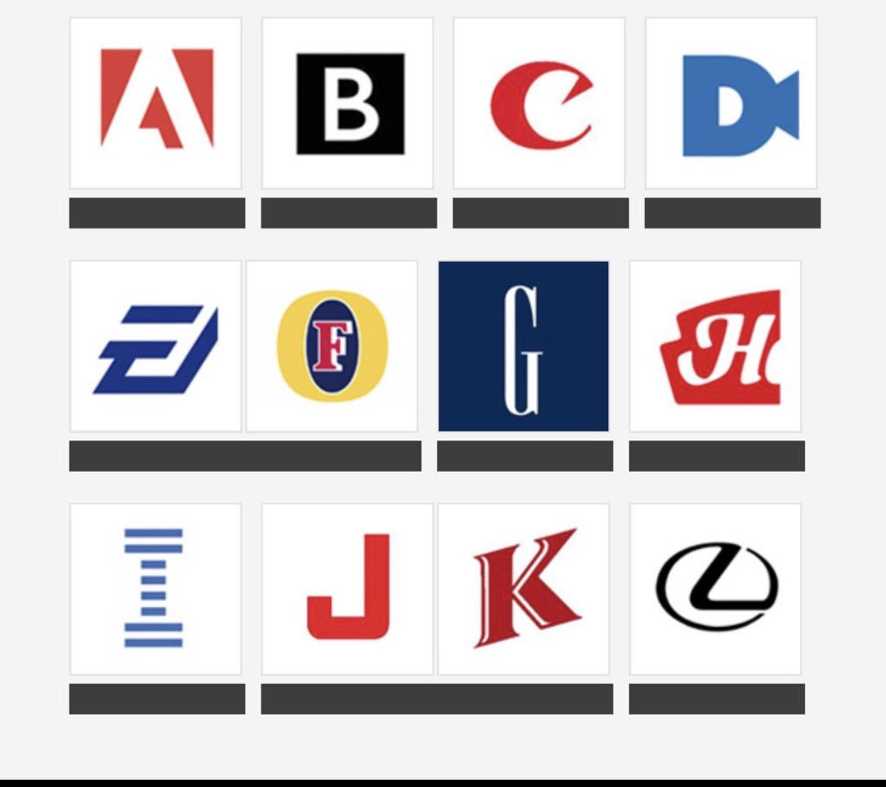

Case Study
Gamified Quiz Experience
Multi-Round Interactive Event Design
Designed a 60+ slide, multi-round interactive quiz experience for a live paid event, using varied formats, multimedia, and structured pacing to sustain engagement across the full session.
Overview
This project involved designing a pub quiz-style experience for adult participants in a live event setting. The goal was to create an engaging, well-paced experience that maintained energy and participation throughout.
The Challenge
Live quiz events often lose momentum when formats become repetitive. Because participants had paid to attend, the experience needed to feel dynamic, varied, and worth the full duration of the event.
Experience Structure
The quiz was designed as a multi-round experience, with each round introducing a different type of interaction to maintain interest and prevent fatigue.

Design Approach
- Structured the event into distinct themed rounds
- Varied interaction formats to maintain curiosity
- Integrated visual and multimedia elements
- Balanced pacing between high and low intensity moments
Round Example: Zoom In
This round used close-up visual details that participants had to identify, shifting the task from recall to visual inference and increasing engagement through curiosity.

Round Example: Name That Painting
This round introduced cultural recognition tasks, expanding the range of challenge types and bringing variety to the experience.

Round Example: Logo Recognition
Participants compared similar logos to identify the correct one, increasing difficulty through subtle differences rather than simple recall.

Outcome
The final experience maintained engagement across all rounds, combining structured flow with varied interaction styles to create a lively and cohesive event.